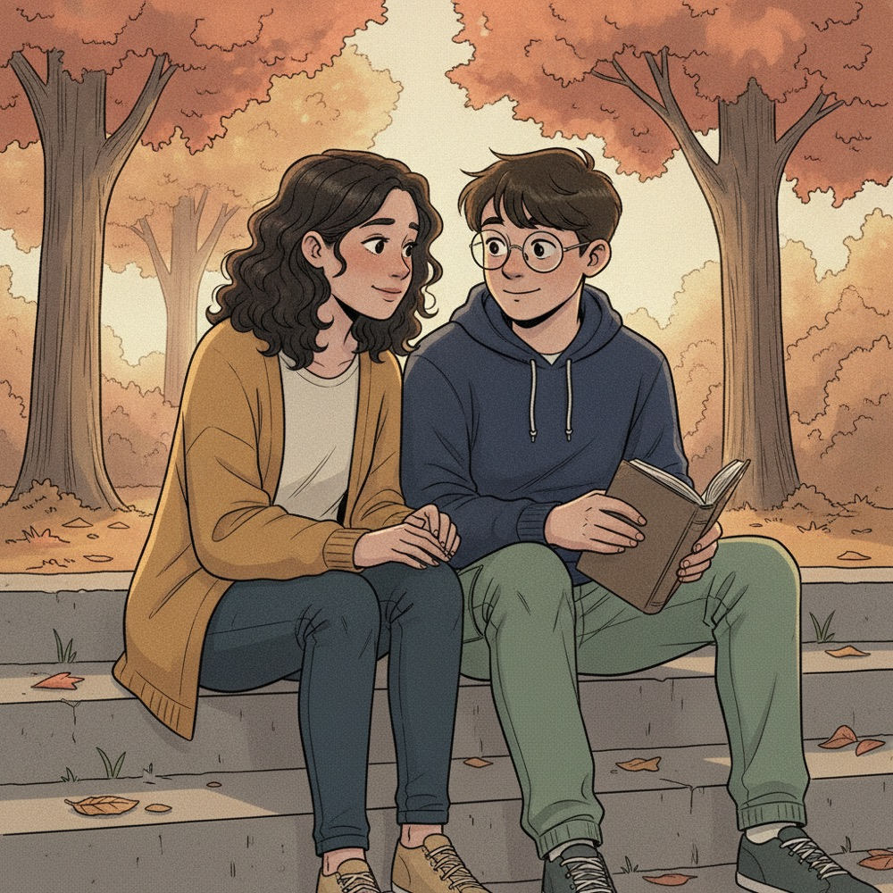

9:41
You chose: Start, then check in

After the bell
"It's not that I think it's dirty. I know it's fine. It just doesn't feel fine."
How it lands
Dev feels understood+2
Dev's anxiety right nowhigh
Loop fedless
What's happening
The OCD loopThought
"germs"
Anxiety
spikes
Compulsion
avoid, wash
Relief
short-lived
Doing the lab for Dev feels kind, but it keeps the loop running. Checking in opens a door to help.


41% of your class chose this
Rewind
Next scene